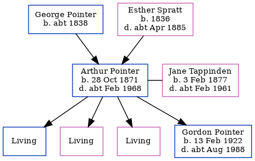

Arthur Thomas Pointer 1871 - c1968
[ Home ] | [ Calendar ] | [ Surnames Index ] | [ Errors ] | [ Family History ]A sailor and the child of George Pointer (a house carpenter) and Esther Spratt, Arthur Pointer, the first cousin three-times-removed on the father's side of Nigel Horne, was born in Birchington, Kent, England on 28 Oct 18711,2,3, was baptised there at All Saints Church on 3 Dec 1871 and also married Jane Tappinden (a market gardener's worker with whom he had 4 children: Frederick Transvaal Arthur Thomas, Dorothy, Ivy and Gordon, along with 3 surviving children) there at All Saints Church on 8 Apr 18994.
During his life, he was living at Station Road in Birchington on 3 Apr 18815; at Hughenden Terrace in Birchington on 5 Apr 18916; at Hoaden Row, High Street, Ash, Kent, England on 2 Apr 19117; and at Thatch Cottages, Little Statenborough, Kent on 29 Sept 19391.
He died c. Feb 1968 in Ashford, Kent, England3.
Parents
- George was born c. 1838
- Esther was born in 1836
Children
- Gordon was born on 13 Feb 1922
Citations
- 1939 Register - Findmypast (was recorded at this address)
- England & Wales births 1837-2006 - Findmypast
- England & Wales deaths 1837-2007 - Findmypast
- Kent, Canterbury Archdeaconry Marriages - Findmypast
- 1881 England, Wales & Scotland Census - Findmypast (was age 9 and the son of the head of the household)
- 1891 England, Wales & Scotland Census - Findmypast (was age 19 and the son of the head of the household)
- 1911 Census for England & Wales - Findmypast (was age 39 and the head of the household)
Media
1881 England, Wales & Scotland Census - GBC/1881/0004822326
1891 England, Wales & Scotland Census Transcription - GBC-1891-0005855703
England & Wales births 1837-2006 - BMD/B/1871/4/AZ/000543/085
England & Wales deaths 1837-2007 - BMD/D/1968/1/AZ/000949/034
Kent, Canterbury Archdeaconry marriages - GBPRS/CANT/M/97055506/1
England & Wales marriages 1837-2005 - BMD/M/1899/2/AZ/000305/074
1939 Register - TNA/R39/1819/1819E/003/09
Kent Baptisms - GBPRS/CANT/B/96574082
Kent marriages and banns - GBPRS/CANT/M/94074789/1
1911 Census For England & Wales - GBC/1911/RG14/04540/0147/1
Family Tree
Map
Generated by ged2site. Last updated on Jul 3, 2024
Known Issues
Census information missing between Census UK 1891 and Census UK 1911